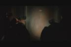

Gotta wear shades so you'll look cool while kicking ass.
Conspiracy Rating: 3
Batou(Motoko's partner) chases down a suspect down a crowded market
area. In the Matrix scene, an Agent is also chasing Neo down a crowded market area. They
also both happen to pull out a gun while in the crowd as well(not shown).
Conpiracy Rating: 8
And in case you werent suprised by that, here is the real kicker.....
Both of these happened RIGHT AFTER that last scene as they were making
their way out of the crowded market area. Bateu and one of the Agents both tried
to take a shot at their target. They ended up missing and hitting some
watermelons instead. A definite ode to Ghost in the Shell by the Watchoski brothers here. Conspiracy Rating: 9

Both movies feature a squad of soldiers moving in. The first 2 pics
show the first scene of Ghost in the Shell, as police surrounded a room
of corrupt politicians; it looks similar to the sqaud of soldiers in the
infamous Matrix hallway gun fight in the next 2 pics. Also notice the last
pic is the very first scene of the Matrix, where a sqaud of police men
surrrounded the room to arrest Trinity. The fact that the similar event
happened in the beginning of both movies, makes me give a higher rating.
Conpiracy
Rating: 6
On to more Scene Comparisons
|

{kind=link}
{kind=link}
{kind=link}
{kind=link}
{kind=link}
{kind=link}
{kind=link}
{kind=link}
{kind=link}
{kind=link}
{kind=link}
{kind=link}
{kind=link}